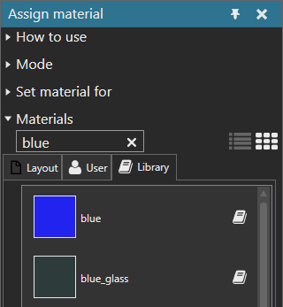

Searching for Material
You can search for a material that is either being used in a layout, defined as a user material or available in a library.
- On the Modeling tab, in the Geometry group, click the Tools arrow, and then under Material, click Assign.
- In the Assign material task pane, expand Materials, and then in the Search box, type a keyword and press ENTER.
Example. Search for blue materials
